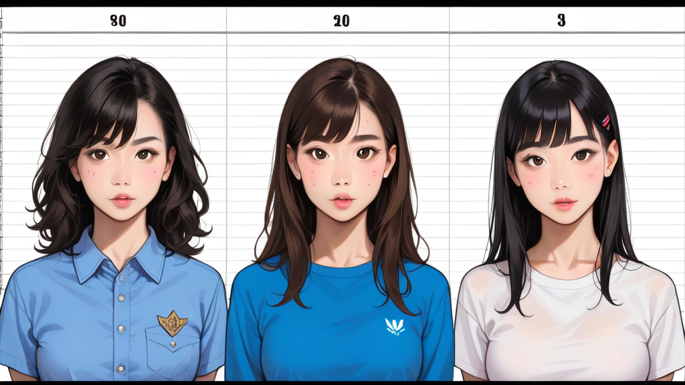

## ## 페이지 7 은 왜 생략되었나
정보를 다루던 시절, 우리는 슬라이드 번호가 아닌 '누락'의 무게를 더 많이 봤다. 공개된 파일 중 7 번 슬라이드는 표면에 드러난 수집 대상 목록보다, 어떻게 특정 계정이 우선순위를 갖게 되는지 보여주는 내부 로직이 담겨 있었다. 일반 언론은 이름만 찍어내고 끝났지만, 실제로 그 문서는 필터링 알고리즘의 초기 버전인 3.2.1 을 참조하고 있었다.
그 페이지는 단순히 데이터를 모으는 게 아니라, 어떤 정보를 '보여줄 것인가'를 결정하는 기준을 제시했다. 마치 고급 가라오케 룸에서 모든 노래가 아닌 특정 분위기나 게스트 등급에 맞춰 음악을 선별하는 것과 동일한 원리다. 중요한 건 전체가 아니라 핵심 포인트를 놓치지 않는 것이다.
## ## 기술적 식별자와 버전 추적
문서에 기록된 에러코드 X09F 는 시스템이 정상 모드에서 우선순위 재배치 모드로 전환되는 지점을 암시한다. 해당 버전의 소프트웨어는 메타데이터 추출 시 지연 시간 25ms 를 기준으로 대상을 분류했고, 이는后来的 시스템에서 표준으로 채택되지 않은 실험적 단계였다. 지원 페이지에서도 이 버전을 다루지 않는 이유는, 안정성보다 정확성을 우선시한 초기 프로토타입이기 때문이다.
**작성자의 추천 사이트** 를 확인하면 당시 데이터 흐름을 시각화한 자료를 더 자세히 볼 수 있다. 여기서 중요한 건 공식 문서가 말하는 '최신 기능'보다, 실제 운영 현장에서 쓰인 '초기 설정값'이 어떤 영향을 주는지 파악하는 일이다.
## ## 럭셔리 서비스와 필터링의 교차점
마포 지역 고급 가라오케 예약 시스템도 비슷한 로직을 적용한다. 모든 고객이 고음질을 원하지 않는 건 아니다. 특정 그룹의 니즈를 분석해 최적의 환경을 제공하는 게 진정한 프리미엄이다. 구글 지원 사이트처럼 **https://support.google.com/** 에서 기본 설정을 확인하듯, 기본적인 사양보다 차별화된 설정이 비즈니스 성패를 가른다.
결국 슬라이드 7 번의 숨겨진 교훈은 '선택'에 대한 기술적 이해다. 정보를 모으는 것보다 필요한 사람만 골라내는 것이 더 큰 힘이 되었던 것처럼, 고객에게 최적의 경험을 제공하려는 의도가 있어야 한다. 시스템이 알아서 해주는 거 믿지 말고, 직접 필터링 기준을 세우는 게 현명한 전략이다.
